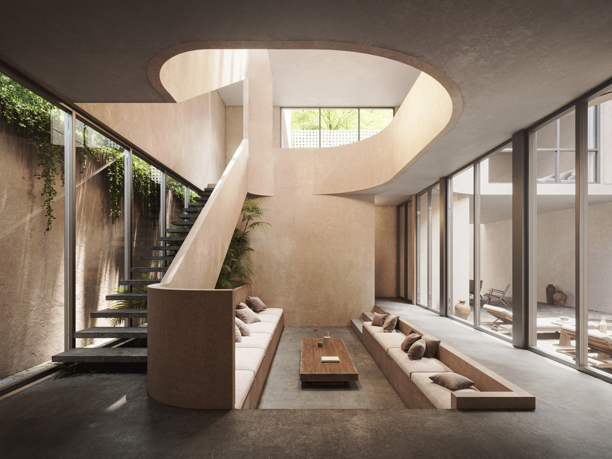

Best Areas to Buy Villas in Tulum: Why Aldea Zama Keeps Leading

A focused look at micro-location strategy for buyers searching where to buy a villa in Tulum.
What serious buyers should evaluate
- Exact micro-location and long-term demand quality
- Asset layout, usability, and maintenance practicality
- Conservative scenario planning for occupancy and costs
- Exit flexibility and resale audience fit
How this connects to Aventuras Villas inventory
For buyers comparing options now, Casa Aventura, Villa Sorella, and the Villa Tikal project represent distinct paths across lifestyle ownership and investment-led positioning in Aldea Zama.
Buyer note: request current pricing, availability, and project documentation in one package before deciding.
Speak with us directly about current villa purchase opportunities